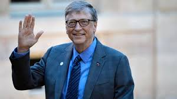

The entrepreneur, computer programmer, and current philanthropist who changed the world and continues to do so.
Bill Gates founded the software company Microsoft with his friend Paul Allen, and spent 13 years as the world’s richest man from 1995-2008. He made enormous contributions to the world of computers as well as the world of philanthropy.
Bill Gates was born by the name William Henry Gates III on October 28, 1955, in Seattle, Washington. He lived in an upper middle class family. His father is Bill Gates Sr. and his mother his Mary Maxwell Gates. Bil Gates' father was a lawyer and his mother was a teacher and then a housewife. He has two siblings: His older sister Kristianne Gates and younger sister Libby Gates Macphee.
At an early age, Gates spent many hours reading over encyclopedias. His parents began to have concerns about his behaviour. He was doing well in school, but he seemed bored and withdrawn. His parents worried he might become a loner.
When Gates turned 13, his parents enrolled him at Lakeside School, a private school in Seattle. He succeeded in nearly all of his subjects, especially math and science, but also in drama and English.
While at Lakeside School, a computer company offered to provide computer time for the students. Gates was amazed by what a computer could do and spent much of his free time on it. At just 13 years old, he wrote a tic-tac-toe program in BASIC computer language. It allowed users to play against the computer.
Gates met Paul Allen at Lakeside School. The pair became fast friends, bonding over their common enthusiasm for computers, even though they were very different people. Allen was more reserved and shy. Gates was feisty and at times combative.
Gates graduated from Lakeside in 1973. He scored 1590 out of 1600 on the college SAT, an amazing achievement that he boasted about for several years whenever he introduced himself to new people.
Gates enrolled at Harvard University in the fall of 1973, originally thinking of a career in law, just like his father. Gates spent more of his time in the computer lab than in his classes. He did not have a proper daily schedule. He got a few hours of sleep, last-minute studied for tests, and still passed with reasonable grades.
Despite his parents’ dismay and un-agreement, Gates dropped out of college in 1975 to pursue his business dream, Microsoft.
Regardless of their differences, Allen and Gates spent much of their free time together working on programs.
In 1970, at the age of 15, Gates and Allen went into business together, developing "Traf-o-Data," a computer program that monitored traffic patterns in Seattle. They gathered $20,000 for their efforts. Gates and Allen wanted to start their own company, but Gates' parents wanted him to finish school and go on to college, where they hoped he would work to become a lawyer.
Allen went to Washington State University, while Gates went to Harvard. After attending college for two years, Allen dropped out and moved to Boston, Massachusetts to work for Honeywell. Around this time, he showed Gates an edition of a popular tech magazine featuring an article on the Altair 8800 mini-computer kit. Both were fascinated by the possibilities of what this computer could do for personal computing.
In 1975, Gates and Allen formed Micro-Soft. The name was a blend of "micro-computer" and "software." In less than a year, they removed the hyphen, making the new name Microsoft. The company's first product was BASIC software that ran on the Altair computer.
At the age of 23, Gates placed himself as the head of the company. With his passion and knowledge for software development, along with a keen business sense, he led the company and worked as its spokesperson. Gates personally reviewed every line of code the company shipped, even rewriting code himself when he saw necessary.
In 1980, the Gates and Allen were approached by International Business Machine (IBM) with a proposal. They wanted Microsoft write the BASIC operating system code for IBM’s upcoming personal computer, the IBM PC. Microsoft created the operating system which they sold to IBM in exchange for a one-time fee of $50,000.
Following the software development for IBM, Microsoft's growth exploded. Staff increased from 25 to 128, and revenue shot up from $2.5 million to $16 million. In mid-1981, Gates and Allen incorporated Microsoft. Gates was appointed president and chairman of the board and Allen was named executive vice president.
In November 1985, two years after an advertising campaign, Microsoft launched Windows. The Windows system looked similar to the Macintosh system that Apple had introduced two years earlier.
In March 1986, Gates made Microsoft publicly traded with an initial public offering, or IPO, of $21 per share, making him an instant millionaire at age 31.
Soon, the company's stock value increased significantly. In 1987, Gates became a billionaire when the stock hit $90.75 a share.
In 1989, Microsoft introduced Office, which combined office productivity applications such as Microsoft Word and Excel into one system that was compatible with all Microsoft products.
In 1987, Bill Gates met a 23-year-old Microsoft product manager named Melinda French. Melinda bright attitude, along with her organized and dedicated worth ethic, made a perfect match for Bill. On January 1, 1994, Melinda and Gates were married in Hawaii. In 1996, their first daughter, Jennifer, was born. In 2002, their second daughter, Phoebe, was born.
In 2000, Gates stepped down from the day-to-day operations of Microsoft, turning over the job of CEO to college friend Steve Ballmer, who had been with Microsoft since 1980. Gates positioned himself as chief software architect so he could concentrate on the more passionate side of the businessm for him. Although he still remained in the board of directors.
In 2006, Bill Gates announced he was transitioning himself from full-time work at Microsoft to devote more quality time to his charity foundations. His last full day at Microsoft was June 27, 2008.
In February 2014, Gates stepped down as chairman of Microsoft to move into a new position as technology adviser.
On Friday, March 13, 2020, Bill Gates finally stepped down from the board of directors as well.
In 1994, Bill and Melinda established the William H. Gates Foundation, which was dedicated to supporting education, world health and investment in low-income communities around the world. The organization also tackles issues such as helping students in the United States become college-ready.
Bill Gates took interest in becoming a civic leader like his mother. He realized that he had an obligation to give more of his wealth to charity.
In 2000, the couple combined several family foundations and made a $28 billion contribution to form the Bill and Melinda Gates Foundation. Over the next few years, Bill’s involvement with the Bill and Melinda Gates Foundation occupied much of his time and even more of his interest.
In 2017, the foundation launched its first Goalkeepers report. It is a report of progress for goals made in important areas of public health such as child mortality, malnutrition, and HIV. During that time, Bill Gates identified infectious and chronic diseases as some of the biggest public health concerns that need to be addressed.
In April 2018, Bill Gates announced that he was partnering with Larry Page, the co-founder of Google, to provide $12 million in funding for a universal flu vaccine. He said that people or groups who tried to make a flu vaccine would receive up to $2 million for efforts that Bill Gates said would be bold and innovative.
After warning the world for years that we were not ready for the next global pandemic, Bill Gates’ words came to life when COVID-19 stepped up onto the world stage. In March, the Bill and Melinda Gates Foundation teamed up with the Wellcome Trust and Mastercard to pledge $125 million toward efforts to slow the outbreaks. In addition, Bill Gates said that his foundation was prepared to invest billions of dollars for building factories to develop a vaccine.
Bill Gates has recieved several awards, doctorates, and other recognitions of his work in both computer science and philanthropy. He is a list of some of those recognitions.
To conclude, here are a few concluding statements about Bill Gates.
Don’t compare yourself with anyone in this world…if you do so, you are insulting yourself.